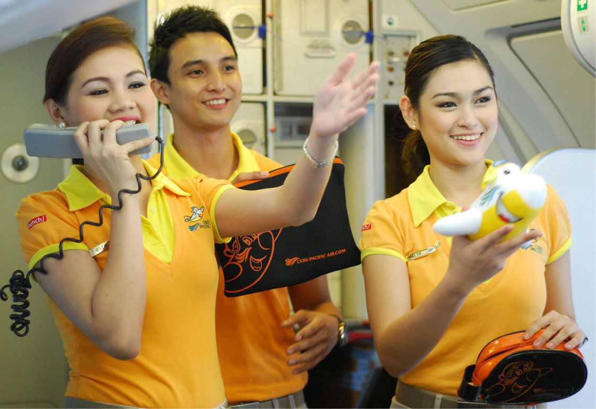
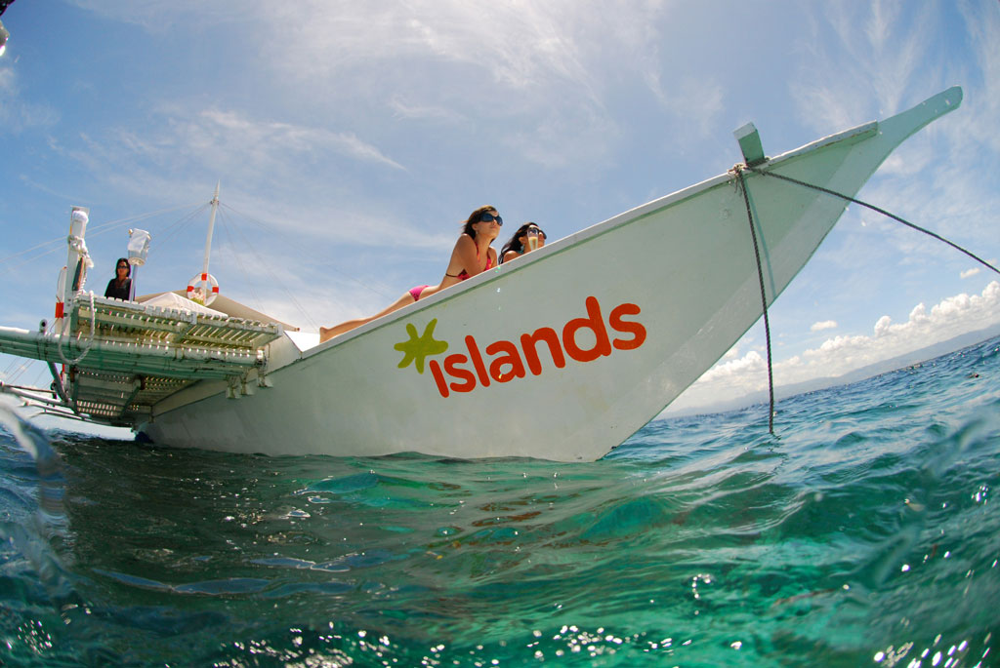

Travel Smart
While the charms of Cebu's beaches, mountains, and other natural attractions may tempt you to dump everything, the need to be connected may still beckon. Dependable cellphone and mobile Internet connection are now as important to any tourist as a change of clothes. Why wait to get home to share your Cebu experience when you can immediately call, send SMS, email, send picture messages, Tweet, post Facebook updates or even check-in?
Good thing, there’s wireless leader Smart Communications Inc. (Smart) which, not only provides the widest and strongest coverage in Cebu and throughout the Philippines, but also the widest array of services.
As soon as you arrive at the Cebu-Mactan International Airport, get a Smart SIM or any of its mobile Internet products to make sure you stay connected even if you are off the grid. You can buy Smart products from any cellphone shop or retailer or you can go to its wireless centers in SM City Cebu PLDT Jones, and in Metro Ayala Cebu.
Text, call
Filipinos love to text and Smart provides the best packages for sending text messages and calling. With more than 47 million subscribers, Smart has the biggest market share in the country as of last June.
The company's prepaid brand, Smart Buddy, offer the lowest per-day costs compared with any other existing prepaid packages. Its Unli Call and Text 150 packages, for example, gives subscribers the power to make unlimited calls and send unlimited texts for 7 days within the Smart network and an additional 100 text messages to other networks for just P150. Its Unli Call and Text 299 offers unlimited calling and texting for 15 days and 150 text messages to other networks for just P299.
Unlimited texting is automatically activated while unlimited calling requires that you key in the prefix 6406 (example 64069181234567)
Smart Buddy also offers LAHATxt Unli 25 which gives 1-day unlimited texting to all networks with 10 minutes of Smart-to-Smart calls (text LTU25 to 2266) and Unlisurf 50 which offers 1-day unlimited mobile browsing (text UNLI50 to 211).
Apart from the affordable packages, Smart offers customers a better calling and texting experience with recent improvements on its network. The company spent P67.1 billion to transform its network allowing it to handle more voice and data traffic.
Mobile Internet
Smart offers the most dependable and fastest mobile Internet experience. Like its call and text packages, the company has several connectivity options for its users.
One example is "Always On"--a volume-based package that allows casual mobile Internet surfers to pay only for the data they wish to consume.
If a subscriber, for example, would like to use his smartphone only for sending email and checking on social networking sites, he can avail himself of a 25MB Always On plan for only P20 a day. More active Internet users who are into video streaming and data tethering can avail themselves of a 2GB Always On package for P995 valid for one month.
Always On reduces the risk of unexpected data charges as it notifies users via SMS once they have consumed 80% of their package. Upon expiration, charging will revert to the regular pricing of P10 for every 30 minutes of use.
Users who prefer a time-based Internet scheme can still avail of an UNLIsurf package starting at just P50 for a whole day of unlimited surfing and P85 for 2 days. UNLIsurf also comes in P300 (7 days) and P1,200 (30 days) denominations.
Meanwhile, those who would only like to access specific sites such as Facebook, Friendster, Multiply, and Twitter can sign up for a “Web UNLI” package for only P20/site per day.
Plug-its, Pocket WiFi
Smart offers several USB dongles for mobile Internet connectivity under its Smart Bro brand. It also offers Pocket WiFi devices that act as portable WiFi zones for up to five gadgets.
Smart Bro Pocket WiFi offers speeds of up to 7.5Mbps and can connect 5 devices.
The Smart Bro Starter Plug It (P995),the Smart Bro Power Plug-It (P1,245), and Smart Bro Pocket WiFi (P3,895) are available in all Smart Wireless Centers and in leading electronics stores nationwide.
Also available from Smart is the 4G HSPA+ Smart Bro Rocket Plug-It (P3,995), the fastest wireless broadband in the country today which is capable of speeds of up to 12Mbps.
Various affordable prepaid load and pricing schemes also complement the Smart Bro Plug-It family. You can choose from packages ranging from as little as P10 per 30 minutes of use to P200 for 5 days unlimited surfing (Unlisurf 200).
Smart Money
Apart from its innovative communications services, Smart also pioneered mobile commerce in the world with its Smart Money service, which was awarded Best Operator-led Mobile Money Program at the Mobile Money Global Awards held in Dubai in late 2011.
Use Smart Money either through your Smart mobile phone or your Smart Money MasterCard. It’s accepted anywhere MasterCard is.
Launched in 2000, Smart is the world’s first reloadable electronic payment card linked to a mobile phone issued by BDO Unibank, Inc. (BDO) in the Philippines. A trusted enabler of partners here and abroad, Smart Money has established linkages with the leading banks of the Philippines, the country’s primary ATM consortia, local and international remittance companies, and millions of MasterCard partner merchants worldwide.
Smart Money combines the strength of Smart's mobile commerce services and MasterCard's wide merchant acceptance network, enabling consumers to enjoy a wide array of goods and services. There are currently 8.5 million account holders of Smart Money who enjoy the benefits of peer-to-peer mobile money transfers, bills payment, and prepaid airtime top-ups using one of the most ubiquitous gadgets today—the mobile phone.
Cebu Pacific tips
Whether it’s a fun trek across historic Asian cities, or a meditative viewing of the sunset-colored vistas of the Philippines’ very own tourist spots, nothing beats experiencing these destinations firsthand.
If you’re planning a vacation, preparing the itinerary and budgeting time and money wisely are of utmost importance. Exploring the Philippines and the region becomes easier and more frequent with Cebu Pacific Air (CEB), especially if you’re a smart and budget-conscious traveler.
Long trusted by international travelers as the airline with low fares and innovative services, Cebu Pacific has these tips and services frequent fliers on a budget will appreciate:
Take advantage of discounts. Travelers should always be on the lookout for bargains. From CEB’s promos and seat sales to Agoda.com flash hotel deals, great bargains can be had just by planning and knowing what you need to book in advance. Use rewards points, and student, group or senior citizen discounts whenever possible too.
Use free travel apps. Free and practical apps can help you maximize your vacation days. Google Maps saves you time and money by providing quick information on routes and landmarks. Ordering food or asking directions in foreign countries is also easier with iTranslate, which provides translations for specific words and phrases in over 50 languages. Another app, AroundMe, conveniently pinpoints your location and the nearest gas station, bar, hospital, cinema, and other establishments.

TRUSTED. Cebu Pacific has long been trusted as an airline with low fares and innovative services.
Maximize Foursquare. Foursquare app users can check exclusive discounts or offers, depending on their location. It’s useful in helping you make the right decisions by providing multiple money-saving options, as it features other users’ tips on the most affordable yet worthwhile establishments.
Be a CEB member. CEB members are provided a time-saving option, since they can view their flight history, booking updates and seat sale alerts. You can also check in for your flights from 4 to 48 hours before your flight to cut down on your queuing time at the airport. These services are available just by registering through www.cebupacificair.com.
Travel light. Keep all personal items contained in a smaller, lighter bag. Plan wisely and bring only clothes that are necessary for the trip. Not only does traveling light keep your belongings organized, going to different places becomes much cheaper and more convenient. If shopping is in the itinerary, leave room for items that you’ll purchase during the trip. Purchase CEB’s prepaid baggage allowance from 15 to 45 kilos for more travel savings compared to paying excess baggage fees at the airport, if that is the case.
Pay attention to currency. Watch the exchange rate in the country you’re visiting. Some exchange centers have less favorable rates than others, so don’t be too hasty to change money. Do an Internet search or ask your friends first where the best rates are offered. It might also be cheaper to book hotels using the local currency.
Watch your meals. You can still be spontaneous with the dining options offered during your vacation, but it’s good to know where the affordable restaurant options are. If you’re staying at a hostel with a kitchen, you can cook your meals yourself using ingredients bought from nearby groceries and markets. Or take note of buffet restaurants so you can eat a heavy lunch. Instead of ordering food at the hotel, go out and find a café or diner serving similar items at less expensive prices.
Fly with CEB. CEB offers the lowest fares in the 32 domestic and 20 international destinations it flies to. Like CEB’s Facebook Fan Page or follow @cebupacificair on Twitter so you’ll know as soon as there’s a seat sale. Budget-conscious travelers can book flights in advance through www.cebupacificair.com., and visit as many diverse and culturally enriching places as possible. Just remember the many helpful ways to keep these travels budget-friendly.
Marco Polo: Best of Cebu
Nestled atop a hill 600 feet above sea level, Marco Polo Plaza Cebu presents panoramic views of the vibrant and bustling Cebu metropolis.
Cebu City's only 5-star hotel, Marco Polo Plaza Cebu has guest accommodations and amenities in its 329 rooms and suites that offer ultimate comfort and taste with an interior design highlighting the local culture.
Situated on Cebu City's famed Nivel Hills (press to check hotel's location), Marco Polo Plaza Cebu has the added advantage of being a private getaway but only a few minutes from the commercial and business centers of the metropolis.
Less than an hour from the international airport in Mactan, it is an ideal location for business negotiations and corporate meetings as well as a sampling of historic Cebu's many attractions.
Marco Polo Plaza Cebu offers a superior venue for hosting business meetings, cocktails and gala events in any of its versatile function rooms, ballroom or grand balcony. Personalized services are available from a capable house team who can organize company events, socials and teambuilding.
A landmark itself in the Queen City of the South, Marco Polo Plaza Cebu also serves as a doorway to Cebu's culture and adventure scenes. Nearby heritage sites such as the pilgrimage church Basilica Minore del Sto. Niño; the country's oldest street, Colon; the Spanish stronghold, Fort San Pedro, as well as the 300-year-old ancestral homes of Parian are excellent itineraries for sightseeing trips. In the opposite direction, adventure seekers can go uphill for a zipline at Doce Pares Mountain Training Park; and even further up the road to Cebu City's mountain range that hosts rivers, waterfalls and more than a dozen caves.
Facilities and services
Marco Polo Plaza Cebu's deluxe rooms have the mountain or city and sea views. The suites are the ultimate in taste and comfort. The Continental Club provides exclusivity and special privileges like private check-ins and checkouts; complimentary refreshments and evening cocktails.
Any room accommodation comes with cable LED television, internet connection, voicemail and IDD phones, coffee and tea service, mini-bar, safe and electronic locks.
A business centre offers the convenience of an office inside the hotel. Mobile phones, laptops and even DVD players on loan to guests can be arranged.
Marco Polo Plaza Cebu is home to some of the finest restaurants in Cebu City, each offering its own distinctive flavor and ambience. These dining places serve an array of local and international cuisine, including Continental, Southeast Asian, Japanese, Chinese and Filipino. A 24-hour room service is also available.
Health buffs will relish the hotel's fitness gym where workout programs are available or sweat outdoors in the jogging route; relax after in the jacuzzi and sauna; and finally cool down with a few laps in the large pool and spa.
And while moms get a new hairdo or their nails done at the salon, children enjoy the playroom right next door.
Marco Polo Plaza Cebu also has a medical clinic, a tour and travel desk and an ATM machine. Its shuttle buses make daily business trips to Asiatown IT Park and shopping trips to SM City Cebu and Ayala Center Cebu.
Marco Polo Plaza Cebu provides these facilities and offers a wide range of services to cater to the needs of guests.
So meet, relax and indulge at Marco Polo Plaza -- the best of Cebu.
To book your stay, you can call 63 32 253-1111 press number to call (this will work only in phones) | or you can use our website booking system.
Islands Banca Cruises
As with any destination gifted with world-class beaches, not to be missed in Cebu is island-hopping along with other water-based adventures such as scuba diving, snorkeling, and fish feeding.
The Islands Group saw an opportunity here and set up Islands Banca Cruises (IBC) in 2008. Taking a fresh look at a cottage-industry product, just as it did with Islands Souvenirs, Islands Banca Cruises elevated and professionalized the island-hopping experience. When it comes to island-hopping, the journey is now made just as important as the destination, with a crew that is customer-focused and well-trained to attend to the guests’ every need and the reconfigured banca to maximize the island-hopping experience for its guests.
Starting with the new banca design, which now sports an expanded deck for optimal sunbathing and sightseeing. Beanbag seats are plentiful and an Islands Banca Cruises trademark feature, along with cushioned seats. An iPod dock, wireless Internet access, fresh towels, cold beverages and snacks are additional touches that really make the island-hopping experience an addicting one.
IBC also put together packages and services that a destination can be proud to offer its visitors. Activities and customizable trips such as sunset cruises, lechon and barbecue picnics on board the banca or on a sandbar, theme parties or a candle-lit dinner for two, can all be arranged. Snorkeling, scuba diving, fish feeding, sea kayaking and dolphin watching are some of the many possibilities while on an Islands Banca Cruise.

BANCA CRUISE. Go to some of the best beach destinations in Cebu by taking an Islands Banca Cruise.
Islands Banca Cruises is today the leading island-hopping service provider in Cebu. The concept has been met with much demand, which spurred the group to add 6 new bancas to the IBC fleet this year, leading up to summer. Plans are currently under way to take the concept to Palawan, Bohol, Boracay and Davao.
Islands Banca Cruises recognizes the importance of the local communities that it works with and provides opportunities for livelihood and training to its members.
IBC has also put together packages and services that a destination can be proud to offer its visitors. Activities and customizable trips such as sunset cruises, lechon and barbecue picnics on board the banca or on a sandbar, theme parties or a candle-lit dinner for two, can all be arranged.
Snorkeling, scuba diving, fish feeding, sea kayaking and dolphin watching are some of the many possibilities while on an Islands Banca Cruise.
To book your cruise, call (press on numbers to call) +032-516-1903 or 0917-630-0736 or 0932-844-0990 or email info@islandsbanca.com.
Powered by

Menu
Guide to Argao
Where to stay
Directory
Map
This guide to Argao is a collaboration among InnoPub Media, Smart Communications Inc., the Municipal Government of Argao, Cebu Provincial Government, Department of Tourism, Marco Polo Plaza Cebu and The Island Group.